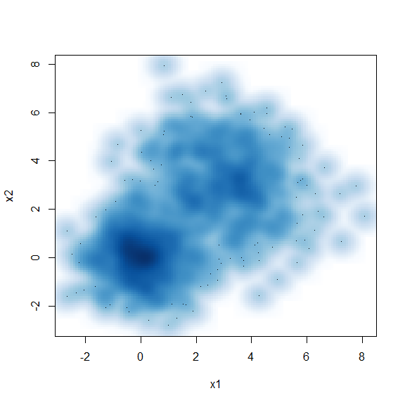

Introduction
The World Happiness Report (WHR) uses survey data to describe how people evaluate their own lives in various countries around the world. Happiness is measured by asking survey participants to respond to the following question:
- Happiness: “Please imagine a ladder, with steps numbered from 0 at the bottom to 10 at the top. The top of the ladder represents the best possible life for you and the bottom of the ladder represents the worst possible life for you. On which step of the ladder would you say you personally feel you stand at this time?”
The WHR uses external observational data on the following six life factors to estimate their associations with happiness and to explain the observed variation of happiness across countries.
Gross Domestic Product (GDP) per Capita: Purchasing Power Parity (PPP) adjusted to constant 2017 international dollars, taken from the World Development Indicators (WDI) released by the World Bank on December 16, 2021. after adjustment for population growth. The equation uses the natural log of GDP per capita, as this form fits the data significantly better than GDP per capita.
(Healthy) Life Expectancy: is constructed based on data from the World Health Organization (WHO) Global Health Observatory data repository, with data available for 2000, 2010, 2015, and 2019 (extrapolation to 2021).
The following items are based on the national average of the binary responses (No = 0, Yes = 1) to the Gallup World Poll (GWP) questions:
Social (Support): “If you were in trouble, do you have relatives or friends you can count on to help you whenever you need them, or not?”
(Freedom): “Are you satisfied or dissatisfied with your freedom to choose what you do with your life?”
(Generosity): “Have you donated money to a charity in the past month?” on log GDP per Capita.
Perceptions of (Corruption): the average of the two GWP questions:
- “Is corruption widespread throughout the government in this country
or not?”
- “Is corruption widespread within businesses in this country or not?”
- Perception of business corruption is used when government corruption is missing.
- “Is corruption widespread throughout the government in this country
or not?”
The goal of this analysis is to cluster countries into different groups based on their results from the 2022 World Happiness Report and describe how the groups differ.
Descriptive Statistics
Figure 1 and Table 1 present the boxplot and summary statistics
(respectively) of each variable from the original dataset. There are no
missing data, the variables are not on same scale, and each variable
contains at least one outlier. The summaries also show that the variance
of GDP differs substantially from the other variables. As
such, the data was standardized before performing the cluster analysis
so that each variable has a mean of zero and standard deviation (SD) of
one.
The code below creates the summary statistics table in SAS.
PROC MEANS DATA=dataset MEAN STD VAR NMISS N maxdec=2;
VAR GDP Support Healthy Freedom Generosity Corruption;
RUN;| GDP | Support | Healthy | Freedom | Generosity | Corruption | |
|---|---|---|---|---|---|---|
| Mean | 1.41 | 0.91 | 0.59 | 0.52 | 0.15 | 0.15 |
| SD | 0.42 | 0.28 | 0.18 | 0.15 | 0.08 | 0.13 |
| Variance | 0.18 | 0.08 | 0.03 | 0.02 | 0.01 | 0.02 |
The following code is used to standardize the data.
PROC STDIZE DATA=dataset OUT=dataset_std METHOD=std;
VAR GDP Support Healthy Freedom Generosity Corruption;
RUN;To create the boxplot, the wide dataset was transposed into a long
dataset based on the happiness rank and the long & short names of
each country. The indices of interest are collected into the variable
category, and their associated value per country is under
the value variable.
PROC TRANSPOSE DATA=dataset_std OUT=dataset_long;
VAR Happiness GDP Support Healthy Freedom Generosity Corruption;
BY Rank Country CNTRY;
RUN;
DATA dataset_long;
SET dataset_long (RENAME=(col1=value));
SET dataset_long (RENAME=(_LABEL_=category));
DROP COL1;
DROP _name_;
DROP _LABEL_;
RUN; With this new dataset a boxplot can be created.
PROC SGPLOT DATA=dataset_long; VBOX value / GROUP=category; RUN;

Figure 1. Boxplots of Each Variable Before (left) & After (right) Standardization.
Correlation Analysis
The pearson correlation (r) matrix and bivariate scatter plots are also analyzed to see if any there are any significant correlations between the variables of interest. Although there are no universal rules for interpreting coefficients, Cohen’s5 recommended guidelines state the following:
Cohen J: Statistical Power Analysis for the Behavioral Sciences. 2nd ed. Hillsdale, NJ, Lawrence Erlbaum, 1988.
- \(|r| < 0.3 →\) Weak relationship
- \(0.3 ≤ |r| ≤ 0.5 →\) Moderate relationship
- \(|r| > 0.5 →\) Strong relationship
As such all bivariate relationships are summarized in TABLE XXX.
The strongest positive correlations are between GDP
versus Support & Healthy. Indicating that
countries with higher GDPs usually have more people with social
structures of support among friends & relatives; and citizens from
higher GDP countries tend to have a higher life expectancy.
Freedom is moderately correlated with most variables.
Generosity is weakly correlated with all variables (i.e.,
countries where many people donate to charity aren’t associated with
other indicators of happiness).
| GDP | Support | Healthy | Freedom | Generosity | |
|---|---|---|---|---|---|
| Strong | Support, Healthy | Healthy | |||
| Moderate | Freedom, Corruption | Freedom | Freedom, Corruption | Corruption | |
| Weak | Generosity | Generosity, Corruption | Generosity | Generosity | Corruption |
PROC CORR DATA=dataset_std;
VAR GDP Support Healthy Freedom Generosity Corruption;
RUN;
PROC SGSCATTER DATA=dataset_std;
MATRIX GDP Support Healthy Freedom Generosity Corruption /
DIAGONAL=(KERNEL HISTOGRAM);
RUN;| GDP | Support | Healthy | Freedom | Generosity | Corruption | |
|---|---|---|---|---|---|---|
| GDP | 1.0000 | 0.7224 | 0.8155 | 0.4585 | -0.1645 | 0.3779 |
| Support | 0.7224 | 1.0000 | 0.6667 | 0.4802 | -0.0024 | 0.2235 |
| Healthy | 0.8155 | 0.6667 | 1.0000 | 0.4330 | -0.0981 | 0.3625 |
| Freedom | 0.4585 | 0.4802 | 0.4330 | 1.0000 | 0.1766 | 0.4024 |
| Generosity | -0.1645 | -0.0024 | -0.0981 | 0.1766 | 1.0000 | 0.0951 |
| Corruption | 0.3779 | 0.2235 | 0.3625 | 0.4024 | 0.0951 | 1.0000 |

Figure XX. Bivariate Scatter Plot.
Assumptions
The Euclidean distance is for each cluster analysis method.
Agglomerative Hierarchical Clustering
Methods
This clustering method starts by defining each data point as a cluster. Then, the two closest clusters are combined into a new cluster. In each subsequent step, two existing clusters are merged into a single cluster based on their inter-cluster distance. This distance can be defined using one of five methods: 1) Single Linkage, 2) Compelte Linkage, 3) Centroid Method, 4) Average Linkage, and 5) Ward’s Error.
The SAS macro below is used to conduct the clustering and create the dendrogram (tree) plots shown in FIGUREXXX.
%MACRO AgglomCluster(ds, clustMethod, OutName);
PROC CLUSTER DATA=&ds METHOD=&clustMethod RSQ NOSQUARE NONORM NOEIGEN out=&OutName;
VAR Happiness GDP Support Healthy Freedom Generosity Corruption;
ID CNTRY;
PROC SORT; BY _ncl_;
PROC TREE DATA=&OutName; ID CNTRY; * Create dendrograms;
DATA &OutName; SET &OutName; &clustMethod = _rsq_; * Adding R sq values for each method to new variable;
RUN;
%MEND AgglomCluster;The %AgglomCluster macro above is wrapped into the macro below which allows one to loop through each distance method and obtain the cluster analysis results for each method.
%let param1 = single complete centroid ward average; * distance method options;
%let param2 = singleout completeout centroidout wardout averageout; * Cluster analysis output datasets;
%macro loop();
%do i=1 %to %sysfunc(countw(¶m1,%str( )));
%let thisparam1=%scan(¶m1,&i,%str( ));
%let thisparam2=%scan(¶m2,&i,%str( ));
%put &thisparam1 &thisparam2;
%AgglomCluster(dataset_std, &thisparam1, &thisparam2);
%end;
%mend loop;
%loop;Figure XXX illustrates the dendrograms of the five clustering methods. Using the distance (height) between clusters, we can see that the complete and Ward’s error methods suggest a solution of 3 or 4 clusters (perhaps 5 for the Ward’s error). The single linkage noticeably suffers from the chaining effect, and the centroid & average methods do not yield clear clustering patterns.


FIGURE XX. Cluster Dendrograms of the Five Methods.
Figure XXX plots the R2 values of the different cluster solutions from the five methods. The Ward’s error, complete, and average linkage methods yield much better R2 values compared to the single linkage or the centroid methods.
XXX The Ward’s error method seems to capture information the best with an R2 value of about XXX0.75, 0.66, 0.50 with 10, 7, and 4 clustersXXX, respectively. For a cluster size of 7 or above, the change in the R2 value seems to flatten out, indicating that adding new clusters will only provide a small increase to the overall R2. For the solutions with less than 7 clusters, four clusters seem to result in the reasonable decrease in R2 (R^2 = 0.50). A 10-cluster solution also seems to be worth examining since this is when the RMS Standard Deviation approaches 1, which decreases from smaller than 1.5 with 4 clusters and 1.32 with 7 clusters but increases to 1.12 with 11 clusters. XXXX
The complete and average linkage methods follow close behind in terms of the R2 statistics, but the single linkage and the centroid methods seem to perform much worse.
The R2 value for complete linkage increases drastically when the cluster size changes from 2 to 3 and from 5 to 6. The average linkage has the biggest R2 increase out of all methods when the cluster size changes from 4 to 6. A smaller increases occur at 7 to 8.
There are sharp increases in R2 when the number of clusters increases from 9 to 10 and from 12 to 13 for the centroid method. However, there are no sharp increase for the single linkage method.
*Merging all output datasets for all methods into one dataset sorted by the # of clusters;
DATA outputs; MERGE singleout completeout centroidout wardout averageout; BY _ncl_;
DATA outputs; SET outputs; IF _ncl_ <20;
symbol1 i = join v = S l = 1 c = gray;
symbol2 i = join v = P l = 5 c = blue;
symbol3 i = join v = C l = 10 c = orange;
symbol4 i = join v = W l = 15 c = red;
symbol5 i = join v = A l = 20 c = CX00FF00;
PROC GPLOT DATA = outputs;
PLOT single*_ncl_=1 complete*_ncl_=2 centroid*_ncl_=3 ward*_ncl_=4 average*_ncl_=5 /OVERLAY LEGEND;
RUN;
R2 Plots for the Five Different Methods.
Interpretation
K-Means
Methods
Since several variables are correlated with one another, the typical measures used to evaluate the k-means clustering models, i.e., the Cubic Clustering Criterion (CCC) and overall R[^2], cannot be used. To use them, a principal component analysis (PCA) must be performed to obtain orthogonal axes before conducting the k-means cluster analysis.
Interpretation
Conclusion
Discuss which model chosen and why
html_pretty in the prettydoc
package is a new output format for creating HTML documents from R
Markdown files. html_pretty is more lightweight compared to
html_document, and is more stylish than
html_vignette when creating package vignettes.
library(SASmarkdown)New Styles
html_pretty currently supports three page themes
(cayman, tactile and architect),
and two syntax highlight styles (github and
vignette). The theme and highlight styles can be specified
in the document metadata, for example:
output:
prettydoc::html_pretty:
theme: architect
highlight: githubYour Familiar Tools
Feel free to use the knitr infrastructure with dozens of
tunable options in your document.
set.seed(123)
n <- 1000
x1 <- matrix(rnorm(n), ncol = 2)
x2 <- matrix(rnorm(n, mean = 3, sd = 1.5), ncol = 2)
x <- rbind(x1, x2)
head(x)## [,1] [,2]
## [1,] -0.56047565 -0.60189285
## [2,] -0.23017749 -0.99369859
## [3,] 1.55870831 1.02678506
## [4,] 0.07050839 0.75106130
## [5,] 0.12928774 -1.50916654
## [6,] 1.71506499 -0.09514745smoothScatter(x, xlab = "x1", ylab = "x2")
You can include code snippets of languages other than R, but note that the block header has no curly brackets around the language name.
// [[Rcpp::export]]
NumericVector timesTwo(NumericVector x) {
return x * 2;
}You can also write math expressions, e.g. \(Y = X\beta + \epsilon\), footnotes1, and
tables, e.g. using knitr::kable().
| Sepal.Length | Sepal.Width | Petal.Length | Petal.Width | Species |
|---|---|---|---|---|
| 5.1 | 3.5 | 1.4 | 0.2 | setosa |
| 4.9 | 3.0 | 1.4 | 0.2 | setosa |
| 4.7 | 3.2 | 1.3 | 0.2 | setosa |
| 4.6 | 3.1 | 1.5 | 0.2 | setosa |
| 5.0 | 3.6 | 1.4 | 0.2 | setosa |
| 5.4 | 3.9 | 1.7 | 0.4 | setosa |
| 4.6 | 3.4 | 1.4 | 0.3 | setosa |
| 5.0 | 3.4 | 1.5 | 0.2 | setosa |
| 4.4 | 2.9 | 1.4 | 0.2 | setosa |
| 4.9 | 3.1 | 1.5 | 0.1 | setosa |
Stay Tuned
Please visit the development page of the
prettydoc package for latest updates and news. Comments,
bug reports and pull requests are always welcome.
A footnote here.↩︎